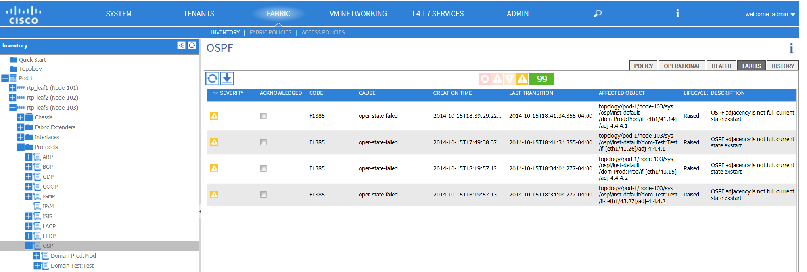
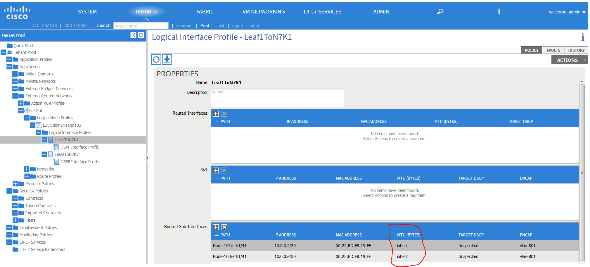
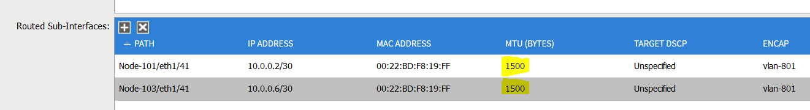
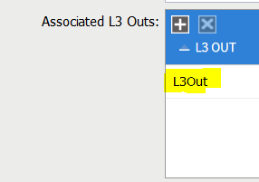
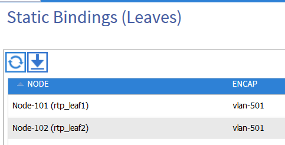
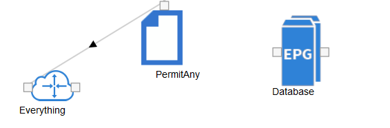
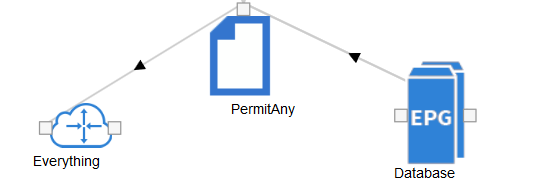
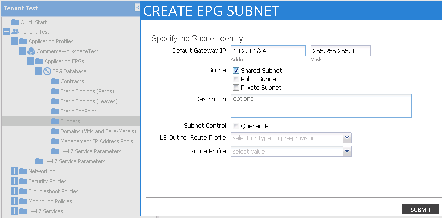

Routed Connectivity to External Networks¶
Overview¶
External network connectivity is an essential component to a useful fabric deployment. To accommodate for connections to external network entities, the ACI fabric provides the ability to automate provisioning of external network connections through the policy model, and this chapter provides an overview and troubleshooting related to external network connection methods.
Routed external network connectivity is provided by the association of an external routed domain to a special EPG in a tenant. This EPG expresses the routed network reachability into an ACI fabric as an object that can be managed and manipulated like any other object. Within the Layer 3 External network, configurable routing protocols are BGP, OSPF or static routes. Configuration of this object involves switch-specific configuration and interface-specific configuration.
The Layer 3 External Instance Profile EPG exposes the external EPG to tenant EPGs through a contract.
As of ACI software version 1.0.(1k), there is one operational caveat that dictates that only one outside network can be configured per leaf switch. However, the outside network configuration can easily be reused for multiple nodes by associating multiple nodes with the L3 External Node Profile.
External Route Distribution Inside Fabric¶
Multiprotocol Border Gateway Protocol (MP-BGP) is the routing protocol running internal to the fabric. A border leaf (an ACI leaf that provides host, fabric, and external network connections) can peer with external networks and redistribute external routes into the internal MP-BGP. The fabric leverages MP-BGP to distribute external routes to other leaf switches. External routes are propagated to leaf switches where there are end points attached for a given tenant.
Route distribution does not occur by default as MP-BGP has to be enabled by configuration. To configure Route Distribution, MP-BGP has to be turned on by assigning a BGP AS number and configuring spine nodes as BGP route reflectors. As a result the APIC will configure all leaf nodes as MP-BGP route reflector clients. APIC will also automate the provisioning of BGP components to provide this functionality - BGP session setup, Route Distinguishers, import and export targets, VPNv4 address family and route-maps for redistribution. Sessions are established between TEP IPs of leafs and route reflector functions running on spines. The MP-BGP process will be contained to the overlay-1 VRF part of the infra tenant. It is important to highlight MP-BGP will not carry Endpoint tables (Endpoint MAC and IP entries). While BGP leverages the TEP IPs for session establishment, IS-IS is leveraged for reachability of TEP IPs of nodes.
Border leafs advertise tenant public subnets to external routers. Transit routing is currently not supported, while the border leafs inject external routes to MP-BGP, external routes learned by a border leaf are not advertised back outside of the fabric. External routes distributed to non-border leafs are installed with next hop as the overlay VRF TEP address of the border leaf where it was learned from
Fabric Verification¶
The BGP Process is started once the BGP object has a valid ASN.
Output from Spine 1¶
rtp_spine1# cat /mit/sys/bgp/inst/summary
# BGP Instance
activateTs : 2014-10-15T13:11:25.669-04:00
adminSt : enabled
asPathDbSz : 0
asn : 10
attribDbSz : 736
childAction :
createTs : 2014-10-15T13:11:24.415-04:00
ctrl :
dn : sys/bgp/inst
lcOwn : local
memAlert : normal
modTs : 2014-10-15T13:11:19.746-04:00
monPolDn : uni/fabric/monfab-default
name : default
numAsPath : 0
numRtAttrib : 8
operErr :
rn : inst
snmpTrapSt : disable
status :
syslogLvl : err
ver : v4
waitDoneTs : 2014-10-15T13:11:36.640-04:00
rtp_spine1# show vrf
VRF-Name VRF-ID State Reason
black-hole 3 Up --
management 2 Up --
overlay-1 4 Up --
rtp_spine1# show bgp sessions vrf overlay-1
Total peers 3, established peers 3
ASN 10
VRF overlay-1, local ASN 10
peers 3, established peers 3, local router-id 172.16.136.93
State: I-Idle, A-Active, O-Open, E-Established, C-Closing, S-Shutdown
Neighbor ASN Flaps LastUpDn|LastRead|LastWrit St Port(L/R) Notif(S/R)
172.16.136.92 10 0 00:00:20|never |never E 179/36783 0/0
172.16.136.95 10 0 00:00:20|never |never E 179/49138 0/0
172.16.136.91 10 0 00:00:19|never |never E 179/56262 0/0
Output from Spine 2¶
rtp_spine2# cat /mit/sys/bgp/inst/summary
# BGP Instance
activateTs : 2014-10-15T13:11:26.594-04:00
adminSt : enabled
asPathDbSz : 0
asn : 10
attribDbSz : 736
childAction :
createTs : 2014-10-15T13:11:25.363-04:00
ctrl :
dn : sys/bgp/inst
lcOwn : local
memAlert : normal
modTs : 2014-10-15T13:11:19.746-04:00
monPolDn : uni/fabric/monfab-default
name : default
numAsPath : 0
numRtAttrib : 8
operErr :
rn : inst
snmpTrapSt : disable
status :
syslogLvl : err
ver : v4
waitDoneTs : 2014-10-15T13:11:32.901-04:00
rtp_spine2# show bgp sessions vrf overlay-1
Total peers 3, established peers 3
ASN 10
VRF overlay-1, local ASN 10
peers 3, established peers 3, local router-id 172.16.136.94
State: I-Idle, A-Active, O-Open, E-Established, C-Closing, S-Shutdown
Neighbor ASN Flaps LastUpDn|LastRead|LastWrit St Port(L/R) Notif(S/R)
172.16.136.91 10 0 00:05:15|never |never E 179/49429 0/0
172.16.136.95 10 0 00:05:14|never |never E 179/47068 0/0
172.16.136.92 10 0 00:05:14|never |never E 179/32889 0/0
Problem description¶
External routes are not reachable from the fabric.
Symptom¶
When checking routing table entries for a given VRF on a leaf, no BGP routes are shown or directly connected routes are not distributed to other leafs.
Verification/Resolution¶
Verification of the route tables can be confirmed on the spine by running the command show bgp session vrf all:
rtp_spine1# show bgp session vrf all
Note: BGP process currently not running
Route reflector configuration includes modifying the default Fabric Pod policy to include a Policy Group with a relationship to the default BGP Route Reflector policy. The BGP Route Reflector needs to have a defined BGP AS number with two spines selected as the route reflectors.
Other troubleshooting commands:
show bgp sessions vrf <name | all>
show bgp ipv4 unicast vrf <name | all>
show bgp vpnv4 unicast vrf <name | all>
show ip bgp neighbors vrf <name | all>
show ip bgp neighbors <a.b.c.d> vrf <name | all>
show ip bgp nexthop-database vrf <name | all>
Problem description¶
Devices that should be reachable via OSPF in ACI fabric are unreachable.
For this example, the reference toplogy is used. Endpoint IPs within ACI fabric are in most cases expected to be routable and reachable from the external/outside network. For this the reference topology, leaf1 and leaf3 are acting as border routers peering with external Nexus 7000 devices using OSPF. For this use case, pinging the DB Endpoint IP of 10.1.3.31 from the Nexus 7Ks.
N7K-2-50-N7K2# ping 10.1.3.31
PING 10.1.3.31 (10.1.3.31): 56 data bytes
Request 0 timed out
Request 1 timed out
Request 2 timed out
Request 3 timed out
Request 4 timed out
--- 10.1.3.31 ping statistics ---
5 packets transmitted, 0 packets received, 100.00% packet loss
N7K-2-50-N7K2#
Symptom 1¶
OSPF routes are missing, neighbor relationships not established.
The following are some common problems that can be seen when getting Open Shortest Path First (OSPF) neighbors to become fully adjacent between ACI and external devices. In a successful formation of OSPF adjacency, OSPF neighbors will attain the FULL neighbor state.
Verification 1¶
Mismatched OSPF Area Type
At the time of this writing, border leaf switches only support OSPF Not So Stubby Areas (NSSA). This implies that the ACI border leaf switches will not be in area 0 and will not provide Area Border Router (ABR) functionality. Although the APIC GUI and object model for OSPF don’t provide area-type configurations, users need to set the area type on the external routers to be a NSSA in order to bring up OSPF adjacency.
In this example, N7K2 has not been configured for NSSA and the neighbors missing from the leaf:
rtp_leaf1# show ip ospf neighbors vrf all
OSPF Process ID default VRF Prod:Prod
Total number of neighbors: 1
Neighbor ID Pri State Up Time Address Interface
4.4.4.1 1 FULL/BDR 05:45:58 10.0.0.1 Eth1/41.14
OSPF Process ID default VRF Test:Test
Total number of neighbors: 1
Neighbor ID Pri State Up Time Address Interface
4.4.4.1 1 FULL/DR 00:18:30 10.0.1.1 Eth1/41.24
On ACI Leafs, checking the properties of the area will reveal not only the area type, but also other settings such as reference bandwidth need to be made sure so that overall OSPF design is in line with best practices.
rtp_leaf1# show ip ospf vrf Prod:Prod
Routing Process default with ID 10.0.0.101 VRF Prod:Prod
Stateful High Availability enabled
Supports only single TOS(TOS0) routes
Supports opaque LSA
Redistributing External Routes from
static
Administrative distance 110
Reference Bandwidth is 40000 Mbps
SPF throttling delay time of 200.000 msecs,
SPF throttling hold time of 1000.000 msecs,
SPF throttling maximum wait time of 5000.000 msecs
LSA throttling start time of 0.000 msecs,
LSA throttling hold interval of 5000.000 msecs,
LSA throttling maximum wait time of 5000.000 msecs
Minimum LSA arrival 1000.000 msec
LSA group pacing timer 10 secs
Maximum paths to destination 8
Number of external LSAs 0, checksum sum 0x0
Number of opaque AS LSAs 0, checksum sum 0x0
Number of areas is 1, 0 normal, 0 stub, 1 nssa
Number of active areas is 1, 0 normal, 0 stub, 1 nssa
Area (0.0.0.100)
Area has existed for 19:46:14
Interfaces in this area: 3 Active interfaces: 3
Passive interfaces: 1 Loopback interfaces: 1
This area is a NSSA area
Perform type-7/type-5 LSA translation
Summarization is disabled
No authentication available
SPF calculation has run 40 times
Last SPF ran for 0.000529s
Area ranges are
Number of LSAs: 10, checksum sum 0x0
Resolution¶
Once the following configuration is done on the N7K2,
router ospf 100
area 0.0.0.100 nssa no-summary default-information-originate
area 0.0.0.110 nssa no-summary default-information-originate
The neighbors are back up and operational:
rtp_leaf1# show ip ospf neighbors vrf all
OSPF Process ID default VRF Prod:Prod
Total number of neighbors: 2
Neighbor ID Pri State Up Time Address Interface
4.4.4.1 1 FULL/BDR 05:40:42 10.0.0.1 Eth1/41.14
4.4.4.2 1 FULL/BDR 00:14:05 10.0.0.9 Eth1/43.15
OSPF Process ID default VRF Test:Test
Total number of neighbors: 2
Neighbor ID Pri State Up Time Address Interface
4.4.4.1 1 FULL/DR 00:13:14 10.0.1.1 Eth1/41.24
4.4.4.2 1 FULL/DR 00:12:47 10.0.1.9 Eth1/43.25
Verification 2¶
Mismatched MTU
At FCS, ACI supports by default MTU of 9000 bytes. Since the default on N7K and other devices could very well deviate from this, this is a common reason to see neighbors stuck in exstart/exchange state.
In this example, N7Ks have not been configured for MTU 9000 and the neighbors are stuck in EXSTART/EXCHANGE states instead of Full:
In GUI:
{kind=link}
In the CLI:
rtp_leaf1# show ip ospf nei vrf all
OSPF Process ID default VRF Prod:Prod
Total number of neighbors: 2
Neighbor ID Pri State Up Time Address Interface
4.4.4.1 1 EXSTART/BDR 00:00:10 10.0.0.1 Eth1/41.14
4.4.4.2 1 EXSTART/BDR 00:07:50 10.0.0.9 Eth1/43.15
OSPF Process ID default VRF Test:Test
Total number of neighbors: 2
Neighbor ID Pri State Up Time Address Interface
4.4.4.1 1 EXSTART/BDR 00:00:09 10.0.1.1 Eth1/41.24
4.4.4.2 1 EXSTART/BDR 00:07:50 10.0.1.9 Eth1/43.25
Resolution 1¶
There are two possible ways to resolve this issue. One is to set the ACI leaf nodes to use a smaller MTU. This is an example of setting a Leaf Interface MTU to 1500 bytes:
{kind=link}
Change this setting from ‘inherit’ to ‘1500’
{kind=link}
Resolution 2¶
Another possible way to resolve this is to set N7K Interface MTU to 9000 bytes as shown below:
!
interface Ethernet8/1
mtu 9000
ip router ospf 100 area 0.0.0.100
no shutdown
!
interface Ethernet8/1.801
mtu 9000
encapsulation dot1q 801
ip address 10.0.0.1/30
ip router ospf 100 area 0.0.0.100
no shutdown
!
With MTU set, the OSPF neighbors should be up and operational.
rtp_leaf1# show ip ospf neighbors vrf all
OSPF Process ID default VRF Prod:Prod
Total number of neighbors: 2
Neighbor ID Pri State Up Time Address Interface
4.4.4.1 1 FULL/BDR 05:40:42 10.0.0.1 Eth1/41.14
4.4.4.2 1 FULL/BDR 00:14:05 10.0.0.9 Eth1/43.15
OSPF Process ID default VRF Test:Test
Total number of neighbors: 2
Neighbor ID Pri State Up Time Address Interface
4.4.4.1 1 FULL/DR 00:13:14 10.0.1.1 Eth1/41.24
4.4.4.2 1 FULL/DR 00:12:47 10.0.1.9 Eth1/43.25
Symptom 2¶
OSPF route learning problems, Neighbor adjacency formed
In our reference topology, both N7Ks are advertising default routes to ACI border leafs. There are situations where either the leafs or the external device (N7Ks) form neighbor relationships fine, but don’t learn routes from each other.
rtp_leaf1# show ip route 0.0.0.0 vrf all
IP Route Table for VRF "Prod:Prod"
'*' denotes best ucast next-hop
'**' denotes best mcast next-hop
'[x/y]' denotes [preference/metric]
'%<string>' in via output denotes VRF <string>
0.0.0.0/0, ubest/mbest: 2/0
*via 10.0.0.1, eth1/41.14, [110/5], 01:40:59, ospf-default, inter
*via 10.0.0.9, eth1/43.15, [110/5], 01:40:48, ospf-default, inter
IP Route Table for VRF "Test:Test"
'*' denotes best ucast next-hop
'**' denotes best mcast next-hop
'[x/y]' denotes [preference/metric]
'%<string>' in via output denotes VRF <string>
0.0.0.0/0, ubest/mbest: 2/0
*via 10.0.1.1, eth1/41.24, [110/5], 01:41:02, ospf-default, inter
*via 10.0.1.9, eth1/43.25, [110/5], 01:40:44, ospf-default, inter
rtp_leaf1#
Verification¶
External OSPF Peers are not learning routes from ACI. For this example, ACI is advertising the DB subnet (10.1.3.0) to the N7K. This subnet exists on Leaf2, while Leaf1 and Leaf3 are the border leafs. As seen below, the N7K is not receiving the route:
N7K-2-50-N7K2# show ip route 10.1.3.0
IP Route Table for VRF "default"
'*' denotes best ucast next-hop
'**' denotes best mcast next-hop
'[x/y]' denotes [preference/metric]
'%<string>' in via output denotes VRF <string>
Route not found
N7K-2-50-N7K2#
ACI manages routing advertisements based on route availability, reachability and more importantly based on Policy. The following concepts are key to understand route exchange between ACI and external peers:
Resolution¶
There are three steps involved in resolving this problem.
The first step that should be looked at is the Bridge Domain The Bridge domain subnet needs to be marked as Public. This lets the ACI Leaf know to advertise the route to external peers. Even with this setting, the routes from Leaf2 are not learned by Leaf1 and Leaf3. This is due to only one of the three main conditions being met for external route advertisements.
rtp_leaf1# show ip route 10.1.3.0 vrf Prod:Prod
IP Route Table for VRF "Prod:Prod"
'*' denotes best ucast next-hop
'**' denotes best mcast next-hop
'[x/y]' denotes [preference/metric]
'%<string>' in via output denotes VRF <string>
0.0.0.0/0, ubest/mbest: 2/0
*via 10.0.0.9, eth1/43.15, [110/5], 00:46:55, ospf-default, inter
*via 10.0.0.1, eth1/41.14, [110/5], 00:46:37, ospf-default, inter
rtp_leaf1#
The Bridge domain needs to be associated with L3 Out as shown below:
{kind=link}
Even with this setting, the routes are not learned by Leaf1 and Leaf3 as there are no contracts in place specifying the communication.
rtp_leaf1# show ip route 10.1.3.0 vrf Prod:Prod
IP Route Table for VRF "Prod:Prod"
'*' denotes best ucast next-hop
'**' denotes best mcast next-hop
'[x/y]' denotes [preference/metric]
'%<string>' in via output denotes VRF <string>
0.0.0.0/0, ubest/mbest: 2/0
*via 10.0.0.9, eth1/43.15, [110/5], 00:58:18, ospf-default, inter
*via 10.0.0.1, eth1/41.14, [110/5], 00:58:00, ospf-default, inter
rtp_leaf1#
However, if the routes are local to Leaf1 and Leaf3, the routes are then advertised due to L3out association. Just for troubleshooting, this can be forced by having EPG association either by path or local binding on Leaf1 or Leaf3.
{kind=link}
Now the N7Ks see the routes from Leaf1 but not Leaf3 as the EPG is associated only to Leaf1 and Leaf2.
rtp_leaf1# show ip route 10.1.3.0 vrf Prod:Prod
IP Route Table for VRF "Prod:Prod"
'*' denotes best ucast next-hop
'**' denotes best mcast next-hop
'[x/y]' denotes [preference/metric]
'%<string>' in via output denotes VRF <string>
10.1.3.0/24, ubest/mbest: 1/0, attached, direct, pervasive
*via 172.16.104.65%overlay-1, [1/0], 00:00:15, static
rtp_leaf1#
N7K-2-50-N7K2# show ip route 10.1.3.0
IP Route Table for VRF "default"
'*' denotes best ucast next-hop
'**' denotes best mcast next-hop
'[x/y]' denotes [preference/metric]
'%<string>' in via output denotes VRF <string>
10.1.3.0/24, ubest/mbest: 1/0
*via 10.0.0.10, Eth8/1.800, [110/20], 00:01:46, ospf-100, nssa type-2
N7K-2-50-N7K2# ping 10.1.3.1
PING 10.1.3.1 (10.1.3.1): 56 data bytes
64 bytes from 10.1.3.1: icmp_seq=0 ttl=57 time=1.24 ms
64 bytes from 10.1.3.1: icmp_seq=1 ttl=57 time=0.8 ms
64 bytes from 10.1.3.1: icmp_seq=2 ttl=57 time=0.812 ms
64 bytes from 10.1.3.1: icmp_seq=3 ttl=57 time=0.809 ms
64 bytes from 10.1.3.1: icmp_seq=4 ttl=57 time=0.538 ms
--- 10.1.3.1 ping statistics ---
5 packets transmitted, 5 packets received, 0.00% packet loss
round-trip min/avg/max = 0.538/0.839/1.24 ms
N7K-2-50-N7K2#
Now without a contract, why is ping successful? This is due to the fact that the pervasive GW address is not an endpoint within that BD/EPG. Contracts are needed for pinging the EP if the Context is in ‘enforced’ mode.
N7K-2-50-N7K2# ping 10.1.3.31
PING 10.1.3.31 (10.1.3.31): 56 data bytes
Request 0 timed out
Request 1 timed out
Request 2 timed out
Request 3 timed out
Request 4 timed out
--- 10.1.3.31 ping statistics ---
5 packets transmitted, 0 packets received, 100.00% packet loss
Now removing the EPG binding on Leaf1, the route would stop getting advertised to the Nexus 7Ks.
A third part of the resolution is that the subnet being marked Public and the Bridge Domain associated with L3 Out, needs a contract to be defined between the Database EPG and L3Out.
The contract needs to be defined and associated both on the L3Out Networks, and Database EPG. Prior to associating contract:
{kind=link}
Associate contract:
{kind=link}
Routes being learned on the N7K:
N7K-2-50-N7K2# show ip route 10.1.3.0
IP Route Table for VRF "default"
'*' denotes best ucast next-hop
'**' denotes best mcast next-hop
'[x/y]' denotes [preference/metric]
'%<string>' in via output denotes VRF <string>
10.1.3.0/24, ubest/mbest: 2/0
*via 10.0.0.10, Eth8/1.800, [110/20], 00:08:06, ospf-100, nssa type-2
*via 10.0.0.14, Eth8/3.800, [110/20], 00:08:06, ospf-100, nssa type-2
N7K-2-50-N7K2#
Now with L3Out defined with associated external networks, OSPF Neighbor peering, routes being advertised and appropriate contract permitting the traffick, the ping is successful.
N7K-2-50-N7K2# ping 10.1.3.31
PING 10.1.3.31 (10.1.3.31): 56 data bytes
64 bytes from 10.1.3.31: icmp_seq=0 ttl=126 time=1.961 ms
64 bytes from 10.1.3.31: icmp_seq=1 ttl=126 time=0.533 ms
64 bytes from 10.1.3.31: icmp_seq=2 ttl=126 time=0.577 ms
64 bytes from 10.1.3.31: icmp_seq=3 ttl=126 time=0.531 ms
64 bytes from 10.1.3.31: icmp_seq=4 ttl=126 time=0.576 ms
--- 10.1.3.31 ping statistics ---
5 packets transmitted, 5 packets received, 0.00% packet loss
round-trip min/avg/max = 0.531/0.835/1.961 ms
N7K-2-50-N7K2#
Problem Description¶
Inter-tenant Communications
This problem is a scenario where there is an endpoint in one tenant’s context that cannot connect to an endpoint in another tenant’s context. For this scenario, the Database servers in Tenant “Test” must communicate with the “Prod” Tenant’s Database tier.
The Test-Database servers are in subnet 10.2.3.0/24, while the Prod-Database Servers are in 10.1.3.0/24.
Verification¶
In this case, Routes not being learned between tenant contexts. Since the Tenants have their respective contexts/VRF, by default the routes are not leaked between the contexts. Here a snippet of the status is show with Prod:Prod not learning 10.2.3.0 from Tenant Test:Test as shown below:
rtp_leaf1# show ip route 10.1.3.0 vrf Prod:Prod
IP Route Table for VRF "Prod:Prod"
'*' denotes best ucast next-hop
'**' denotes best mcast next-hop
'[x/y]' denotes [preference/metric]
'%<string>' in via output denotes VRF <string>
10.1.3.0/24, ubest/mbest: 1/0, attached, direct, pervasive
*via 172.16.104.65%overlay-1, [1/0], 00:57:55, static
rtp_leaf1# show ip route 10.2.3.0 vrf Prod:Prod
IP Route Table for VRF "Prod:Prod"
'*' denotes best ucast next-hop
'**' denotes best mcast next-hop
'[x/y]' denotes [preference/metric]
'%<string>' in via output denotes VRF <string>
0.0.0.0/0, ubest/mbest: 2/0
*via 10.0.0.9, eth1/43.17, [110/5], 13:18:12, ospf-default, inter
*via 10.0.0.1, eth1/41.16, [110/5], 13:18:09, ospf-default, inter
rtp_leaf1#show ip route 10.2.3.0 vrf Test:Test
IP Route Table for VRF "Test:Test"
'*' denotes best ucast next-hop
'**' denotes best mcast next-hop
'[x/y]' denotes [preference/metric]
'%<string>' in via output denotes VRF <string>
10.2.3.0/24, ubest/mbest: 1/0, attached, direct, pervasive
*via 172.16.104.65%overlay-1, [1/0], 00:58:41, static
rtp_leaf1#
Resolution¶
The subnet address to be leaked between contexts, Tenants, in addition to being defined under the Bridge Domain, needs to be marked as a as a shared subnet under the EPG. This is the first step in the resolution of this issue.
{kind=link}
With the subnet defined, the route is now visible under Prod:Prod.
rtp_leaf1# show ip route 10.2.3.0 vrf Prod:Prod
IP Route Table for VRF "Prod:Prod"
'*' denotes best ucast next-hop
'**' denotes best mcast next-hop
'[x/y]' denotes [preference/metric]
'%<string>' in via output denotes VRF <string>
10.2.3.0/24, ubest/mbest: 1/0, attached, direct, pervasive
*via 172.16.104.65%overlay-1, [1/0], 00:00:09, static
rtp_leaf1#
However, while routes are learned the Prod and Test DB endpoints are still unable to communicate. Contracts and Policies to allow the communication need to be defined for the communication to happen. To figure out the contracts, the PcTag for the EPG need to be known using Visore.
DN PcTag
uni/tn-Test/ap-CommerceWorkspaceTest/epg-Database 5474
uni/tn-Prod/ap-commerceworkspace/epg-Database 32774
Verify, using GUI (Fabric -> Inventory -> Pod -> Pools -> Rules) or CLI
rtp_leaf1# show zoning-rule | grep 32774
rtp_leaf1# show zoning-rule | grep 5474
rtp_leaf1#
To take the second step in the resolution, a special contract needs to be created for inter-tenant communications with a scope of ‘Global’ and should not have a scope of ‘Context’. The contract should also be ‘Exported’ from one Tenant to the other Tenant, so that the other EPG can consume the defined contract as a ‘Consumed Contract Interface’.
Once the appropriate contract configuration is done, the contract show up on the leafs so the data plane can allow the inter-tenant communication.
rtp_leaf1# show zoning-rule | grep 5474
4146 32774 5474 default enabled 2523136 permit
4147 5474 32774 default enabled 2523136 permit
rtp_leaf1# show zoning-rule | grep 32774
4146 32774 5474 default enabled 2523136 permit
4147 5474 32774 default enabled 2523136 permit
rtp_leaf1#